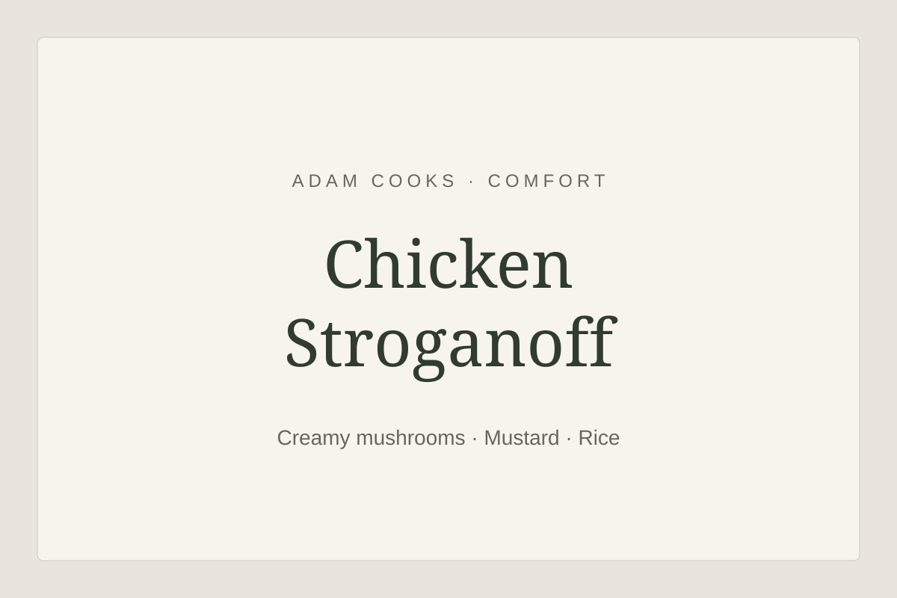

Comfort
Chicken Stroganoff
Diced chicken and mushrooms in a creamy mustard sauce, served with rice. Serves 4.
person
Ingredient quantities update automatically

Ingredients
Method
- Heat the olive oil in a non-stick frying pan over a medium heat. Add the sliced onion and cook for around 15 minutes until completely softened, adding a splash of water if it starts to stick.
- Add the crushed garlic and cook for 2–3 minutes, then add the butter.
- Once the butter starts to foam, add the sliced mushrooms and cook for around 5 minutes until softened.
- Season the onions and mushrooms with salt and pepper, then transfer to a plate.
- Put the flour in a bowl with a generous pinch of salt and pepper. Add the diced chicken and toss to coat.
- Add the chicken to the pan, adding a little more oil if needed. Fry for 5–7 minutes, turning regularly, until golden on the outside. It will finish cooking in the sauce.
- Meanwhile, cook the rice according to the packet instructions, timing it to finish with the stroganoff.
- Return the onions and mushrooms to the pan. Whisk together the crème fraîche, English mustard and chicken stock, then stir into the chicken.
- Simmer gently for around 5–8 minutes, stirring occasionally, until the sauce has thickened and the chicken is cooked through. Cut into the largest pieces to check they are steaming hot throughout with no pink meat. Continue cooking if needed. Stir through the parsley, check the seasoning and serve with the rice.